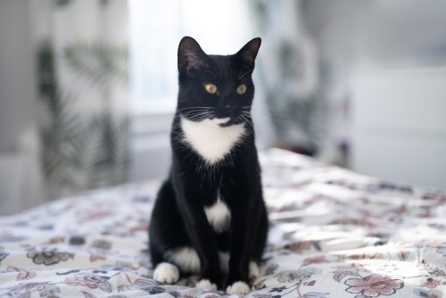
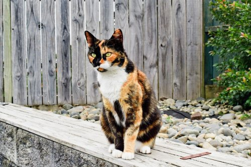
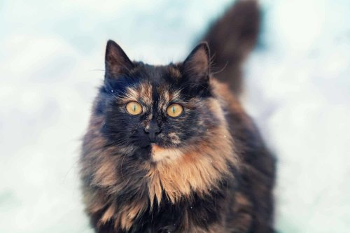
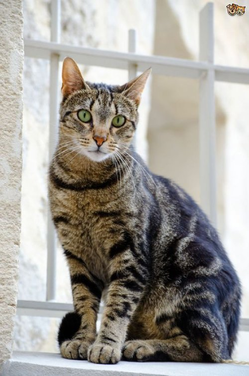
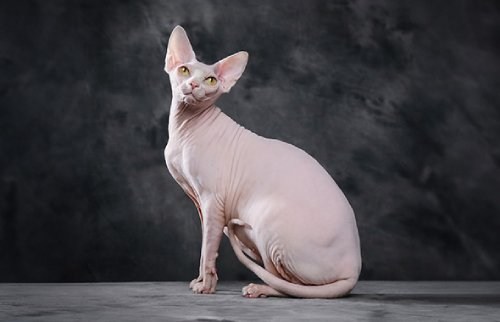

I love cat's. This page talks about cats I find interesting with facts and guide on how to identify them.
Tuxedo does not refer to the breed of cats but for the fur pattern. Their bellies, chests and paws are white, while the rest of their body is black, orange or gray. They are largely remembered by ther black and white fur looking like a tuxedo.
The same with the Tuexedoe cat, Calico does not refer to the breed of cat but the fur pattern. They have a three color coat combination of white, black and red/orange. Depending on the culture a Calico can represent money or good luck. Japanese sailors used to bring them to their voyage for good luck. Most Calico cats are female(genetics is related to the x chromosome)
Cats with a black and orange fur.
Identified by its M-shaped marking on its forehead, striped by its eyes and across its cheeks. Is considered one of the most common types of cats. Taby refers to the fur pattern.
Sphynx are cats with no fur. They don't shed fur because of the lack thereof of fur. They aren't hypoallergenic because they shed dander.
Here's a video about sphynx cats: